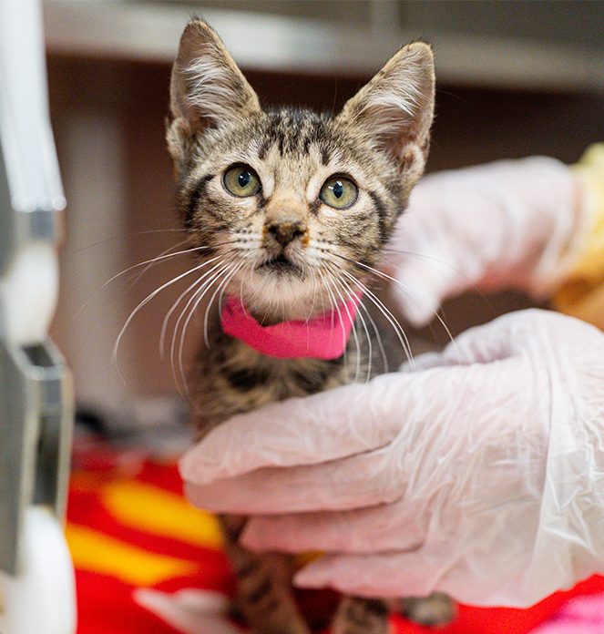
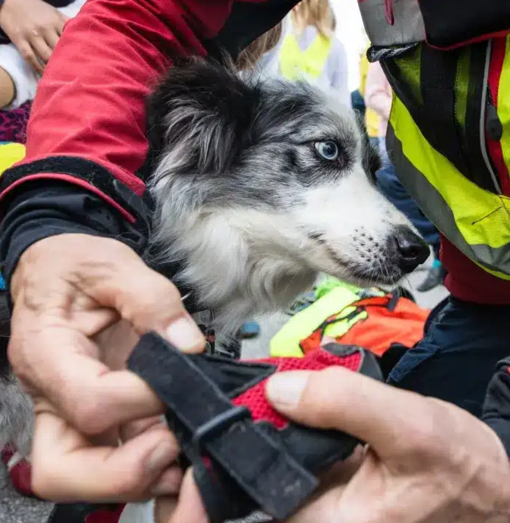
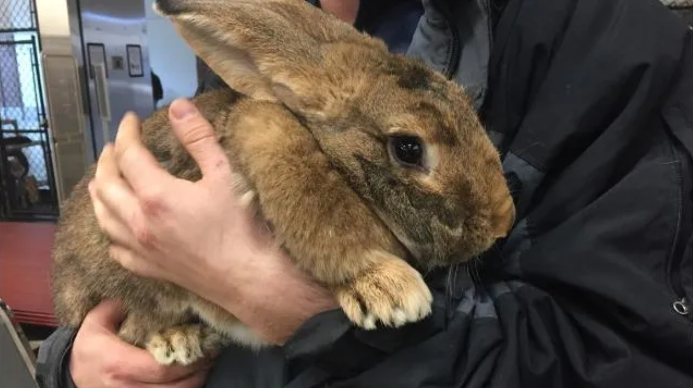

Rescue Stories
Read the heartwarming journeys of animals who were rescued, rehabilitated, and given a second chance at life. These stories showcase the power of compassion and community support.
Found abandoned on the streets, Max received months of care and training

A timid rescue cat who blossomed through patience and loving care.

Through rehabilitation, Charlie overcame his past trauma.

Rescued from neglect, this bunny learned to trust again.